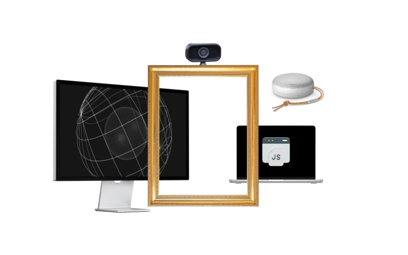
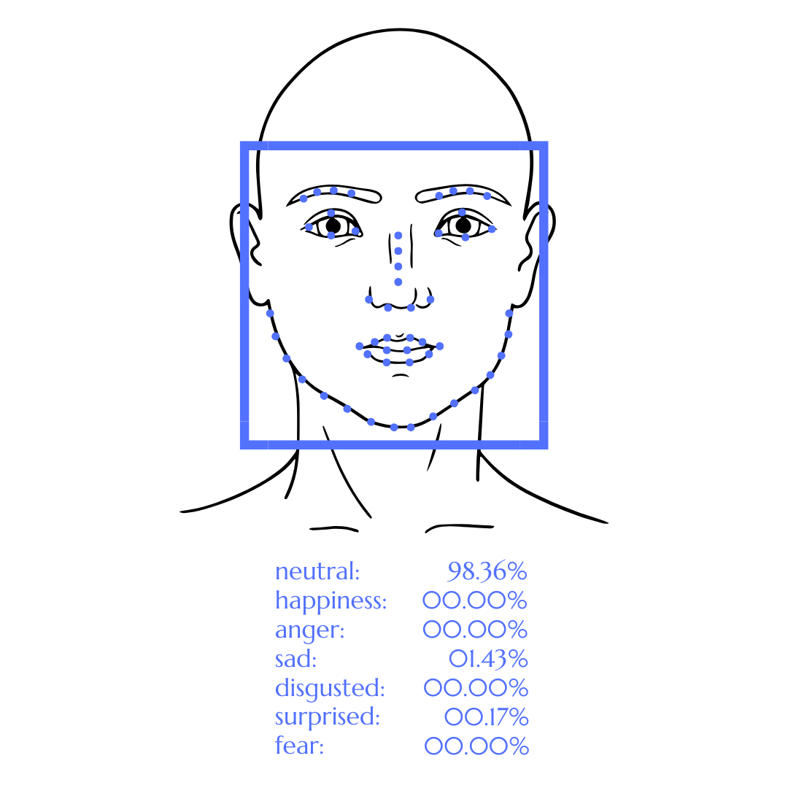
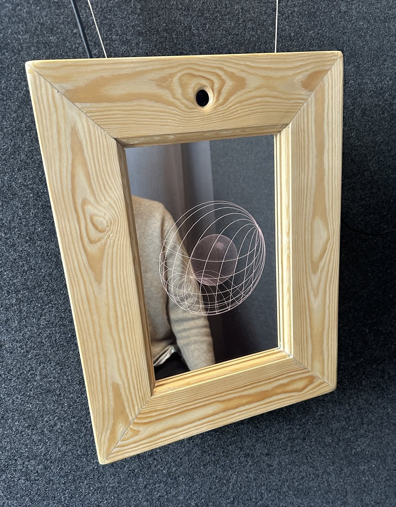
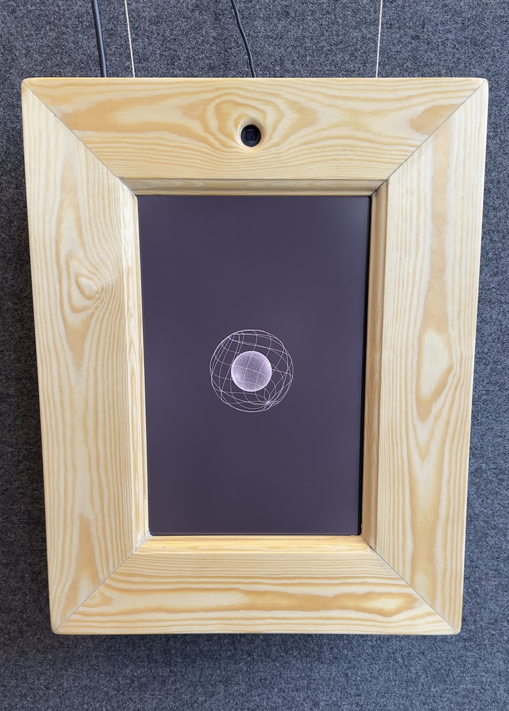

Magic Mirror is an intelligent mirror that reflects your inner self rather than your outer appearance. It reads your facial expression and tells you what emotions you're conveying to those around you - a bachelor's project in reflective design and human-computer interaction, built with O. Overmark and V. Obel at the IT University of Copenhagen.
Description
Most of us have no idea what our face is doing. Magic Mirror is a mirror that shows you that - not your literal reflection, but a real-time reading of the emotion your expression is projecting to the people around you. It borrows an old idea: the "magic mirror" that reveals an inner truth rather than an outer image, the same trope behind the mirror in Snow White. Ours does it for real, using a hidden camera built into a wooden frame to read your face.
Inside, a webcam feeds a facial-recognition model (ml5.js's face-api, running on the creative-coding library p5.js) that scores your expression across seven categories - neutral, happy, angry, sad, disgusted, surprised, fearful - each as a percentage. Rather than showing that data directly, the mirror translates it into two abstract, morphing 3D spheres, redrawn in real time as your expression shifts, alongside a layer of ambient sound (built with howler.js) that fades between happy, sad, and neutral tones as one crosses a confidence threshold. The effect sits deliberately at a remove from your actual face - you see a shape and hear a tone, and have to work out what they reveal about you.
The project was developed as a piece of reflective design, exploring emotional intelligence and non-verbal communication: the goal isn't to tell you your mood, but to make you aware of what you're visibly broadcasting to others, whether or not it matches how you actually feel inside. I was responsible for concept development, the coding described above, and building the physical prototype, as our bachelor's project (May 2024).

The mirror's core hardware and software: a hidden webcam and speaker built into a wooden frame, a p5.js sketch rendering the emotion visualization, and the JavaScript backend running the facial recognition.

face-api plots 68 facial landmarks and scores the detected expression across seven emotions in real time - the data that drives everything the mirror shows and plays.

The finished prototype in use - the hidden camera sits in the small hole at the top of the frame.

An earlier version placed two-way glass in front of the screen, so you'd see your own reflection layered over the sphere. User testing found people couldn't focus on both at once - one tester said the glass made it "feel like I'm controlling it" rather than something that represented her, and felt more connected to the mirror once the glass was gone. We removed it for the final prototype shown here. The sphere itself stays tightly formed and largely undistorted whenever the detected expression is close to neutral - the state captured in this shot.